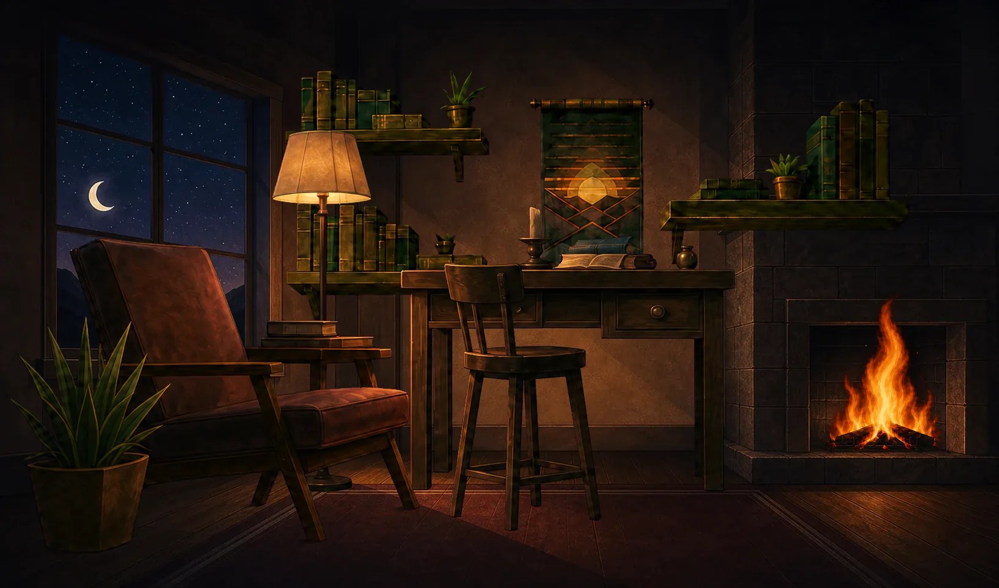

Rutgers Computer Engineering · Class of 2028
Mika Be
Applied AI and software engineering
I built Room of Days, an iPhone app on the App Store, and ran the text-to-speech research behind a paper that won 2nd Place Best Full Paper at IEEE ISEC 2026. I’m looking for Summer 2027 internships in software engineering and applied AI.

Try a Quest
Read ten pages
Main Quest · Mind
Quest complete
+26 XP · +8 Glimmers
Mind 116 → 122 (+6)
- 100%1st
- 50%2nd
- 25%3rd
- 10%4th+
The app’s room art and parallax, rebuilt for the browser. The Quest runs the app’s reward formula, starting from the account shown in its App Store screenshots, without critical hits or loot. Motion access was declined, so the room stays still.
Today’s Quests. Six life stats sit above the Choose today prompt and the day’s open Quests; Read ten pages is the main Quest at +26 XP.
The Workshop. The Steward, an optional character, asks what you’re working on and opens a Quest or helps shape a new route. His lines are pre-written, with no AI chat.
A finished Quest. +26 XP, +8 Glimmers and +6 Mind land together, the streak multiplier shows ×1.6, and the receipt offers swipe to undo.
I came up with Room of Days and took it from idea through Apple review on my own.
- Flutter and Dart
- Offline-first save on the phone
- TypeScript Cloud Functions with App Check and App Attest
- Codemagic CI, builds up to 49 across versions 1.0.0 to 1.0.4
Research · IEEE ISEC 2026, Princeton
Kuiper TTS
An offline text-to-speech system that reads scientific papers aloud, equations included, for blind and low-vision readers. The team’s paper won 2nd Place Best Full Paper at IEEE ISEC 2026.
I led the 18-member team. I helped recruit it and assigned work across the codebase, and I ran the text-to-speech research and experiments behind the paper. I’m one of its 11 co-authors, and Prof. Dov Kruger is the PI.
Two readings of the same equation
A literal reading like “d q over d t” is hard to follow by ear. I rendered all 46 equations of a 1971 antenna paper twice, once as the literal narration and once rewritten the way a person would say it. The rewrite rules became the paper’s structure-aware equation verbalization.
Literal
i equals d q over d t equals C times d v over d t equals negative 2 pi f C V sub zero times sine of 2 pi f t
Rewritten
i equals the derivative of q with respect to t, equals C times the derivative of v with respect to t, equals negative two pi f C V sub zero, times sine of, open parenthesis, two pi f t, close parenthesis
Both clips use the public Piper voice en_US-lessac-medium; my own voice is below. The rewritten side also uses a slower math preset, and part of its narration was edited by hand. Equations from H. T. Friis, 1971.
A voice trained on my own recordings
I recorded 886 clips, about 41 minutes, with a terminal recording tool I built that stops on silence and lets me keep or redo each take. A one-command pipeline on the lab’s Jetstream2 GPU allocation trims and normalizes the audio, rejects clipped or noisy takes, trains the voice and exports it to ONNX.
When one version developed audible pitch jumps, I traced them to an augmentation step that resampled the audio and shifted its pitch by about a semitone. I replaced it with time-stretching and retrained; version 5 is the voice after that fix.
Version 3
The integral from zero to infinity of e to the negative x squared, d x, equals the square root of pi over two.
Version 5
For an RL circuit, the time constant is L over R.
Cross-device notebook · private TestFlight beta
Room Notes
A notebook for engineering classes where each device does a different job over the same fixed-layout pages: Apple Pencil writing on the iPad, board photos and scans on the phone, typed notes, equations and code on the laptop.
A pen freeze, traced and removed
In TestFlight Build 30’s code, pausing for about two seconds and then writing again froze the pen for about a second and a half. Profiling traced it to the app handling the sync echo of its own save, which re-encoded the whole library each time. After the fix, the hold sits at the harness’s timer floor.
Build 30: 1,479 ms median (re-run 1,462 ms). Now: about 1.5 ms median (the timer’s floor), worst 8.3 ms.
Write a line, lift the pen for about two seconds, then write again.
- Pause
- none yet
- Pen held
- none yet
The replay models only the two-second pause the benchmark reports.
Measured in a desktop test that runs the app’s real editor, SQLite repository and sync service against an in-memory Firestore that mimics iOS delivery. Not yet confirmed on the iPad. The pad is a browser replay of the measured timing.
In Build 30’s code, one erase on a 2,000-stroke test page re-recorded about 1,000 strokes. Ink now lives in stable groups of at most 32, so the same erase touches about 30.
Patched Flutter engine. I patched Flutter’s iOS engine so Apple Pencil’s between-frame touch samples reach the app, then built and signed it in Codemagic CI for TestFlight.
Saves that survive. Each edit and its pending sync operation commit in one SQLite transaction with a durable outbox. In 40 hard process kills during saves on a desktop, no acknowledged save was lost.
Lecturer mode. Built and in private testing: a lecturer shows a QR code, each student gets a private copy of the lecture, and answers stay anonymous to the lecturer.
Browser lab for Rutgers ECE · a team module I started and led
Knowsy Breadboard Lab
A virtual breadboard for Rutgers’ Digital Logic Design and Principles of EE II labs. Students can wire switches, LEDs, passives and 74LS chips with their datasheet pinouts the way they would at the bench, and a schematic draws itself from the wiring.
It rehearses the physical part of lab: power rails, the center trench, chip orientation and datasheet pinouts. Eight guided labs based on the course materials check each step by its electrical connection.
Case studyHow the lab reads a net
Every net resolves to one of four levels, and drivers have strength. A pull-up drives weakly, so a closed switch wins without a false conflict, while two strong drivers that disagree are a real one. This sketch applies the lab engine’s rule to the Lab 1 circuit.
Readings are the lab’s logic-level values: 5.00 V high, 0.00 V low, 1.60 V floating and 2.50 V for a conflict.
The pull-up holds the input high, so the inverter’s output is low and the LED stays dark.
- 8 guided labs and 90 auto-checked steps
- 34 parts, 15 of them 74LS chips
I started the module in May 2026 and led a three-person team, one of seven module teams on Prof. Kruger’s Knowsy platform. I built the breadboard UX, the self-drawing schematic, the debugging tools and the modified-nodal-analysis solver behind the oscilloscope and Bode plotter. A teammate built the sequential simulator. Builds export to Verilog with a testbench.
I directed a pre-release audit that caught a lab passing on an unwired board and four chip pinouts that didn’t match the TI datasheets, and all of them were fixed. The lab is not yet in front of students.
About
I’m a computer engineering student at Rutgers with a minor in computer science, graduating in May 2028. I like owning a system from the first product decision through the release.
From July 2025 to August 2026 I was Lead Software Developer (internship) at this.is, a place-discovery startup. I was its primary engineer, built its recommendation engine on Google Places, and mentored and managed two interns. Before that, as a software engineering intern at Schieber Research, I did competitive analysis and product documentation for this.is, then a client of the firm, and built its first three prototypes.
I design each system and set the tests a change has to pass, and I build much of the code by directing AI coding agents (Claude Code, Codex). Long term I want to work in robotics, with software as my base.
Outside engineering I think about story games and what makes a character stay with a player.
- Education
- Rutgers, B.S. Electrical and Computer Engineering (Computer Engineering), CS minor, expected May 2028 · 3.838 GPA · Dean’s List all four completed semesters
- Honors
- 2nd Place Best Full Paper, IEEE ISEC 2026 (co-author) · IEEE‑HKN · Bergen County Academies Computer Science Departmental Award, 1 of 3
- This semester
- Computer Architecture and Assembly · Linear Systems and Signals · Electronic Devices · Discrete Structures II
- Tools from coursework
- Vivado and Verilog · LTspice · MATLAB and Simulink · oscilloscopes and logic probes · soldering · Onshape
- Languages
- English (fluent) · Hebrew (native) · Spanish (conversational)
- Also built
- Bio, a Discord bot that helps members of a server find people with shared interests. Live in two servers. Node.js, SQLite, Railway. Source
Contact
Summer 2027 internships
I’m looking for software engineering and applied AI internships for Summer 2027, and I’m open to remote or part-time roles during the semester.